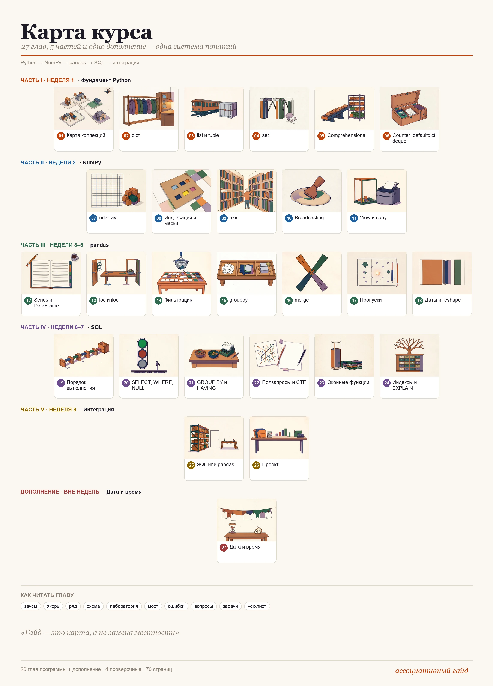

Карта курса
постер · A3
Карта курса 27 глав, 5 частей и дополнение на одной странице
Все иллюстрации-якоря собраны вместе: видно, как части переходят одна в другую и какая метафора стоит за каждой главой.

Постер собран из иллюстраций глав. Вернуться к обложке или начать с главы 01.